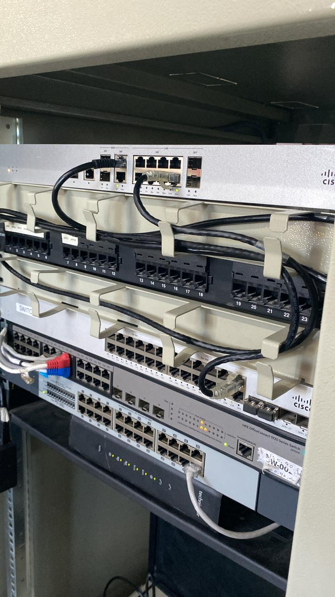
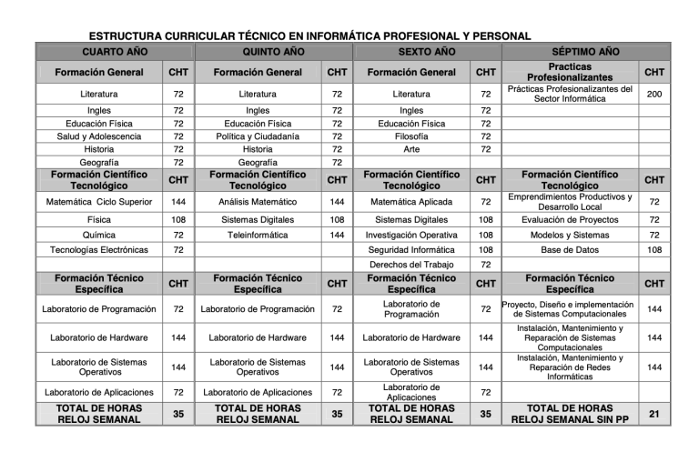

E.E.S.T N°3 Víctor Mercante
estará capacitado para asistir al usuario de productos o servicios informáticos.
Brindando servicios de instalación, capacitación, sistematización, mantenimiento primario, resolución de problemas derivados de la operatoria, y apoyo a la contratación de productos o servicios informáticos.

Mantener componentes de equipos de computación y comunicaciones, programas y sistemas.

La tecnicatura se estructura en 3 niveles formativos: Formación General, Formación Científico Tecnológico y Formación Técnica Específica.
Nuestro equipo de conducción en conjunto a un amplio cuerpo de profesionales afronta los desafíos de una industria en constante cambio.
Directora

Vicedirectora
Vicedirectora
Jefa de Area